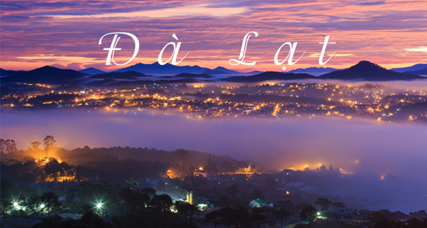
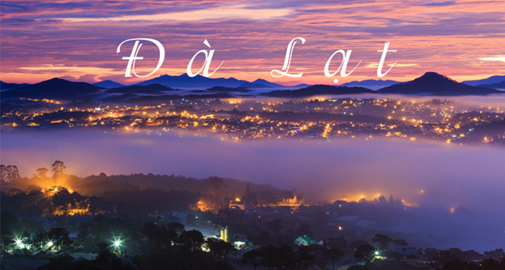
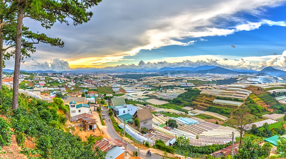
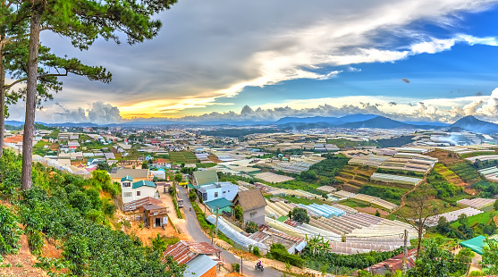
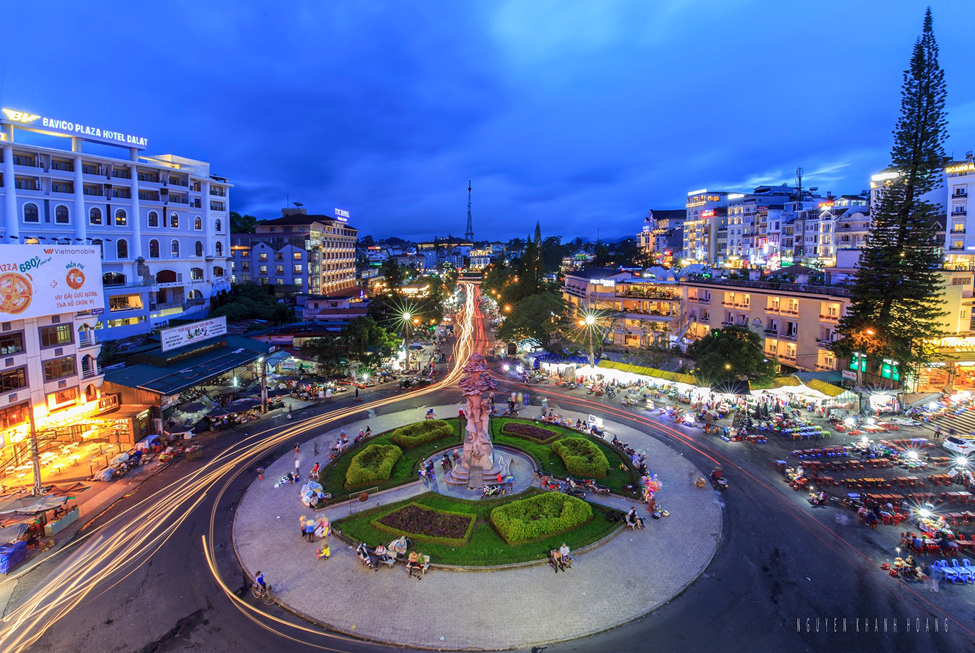
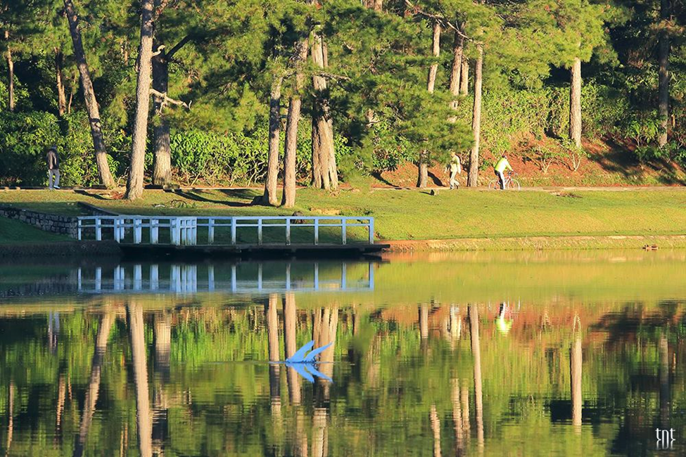
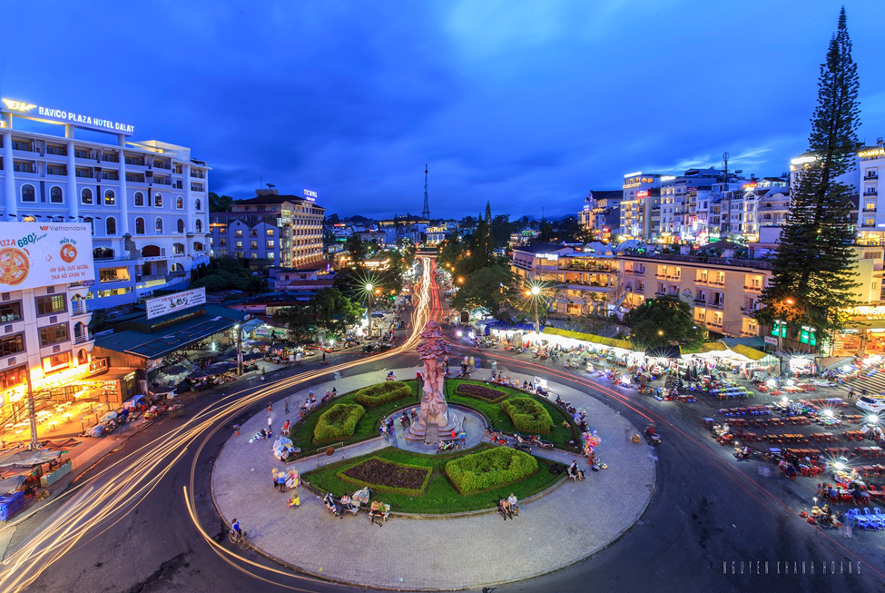
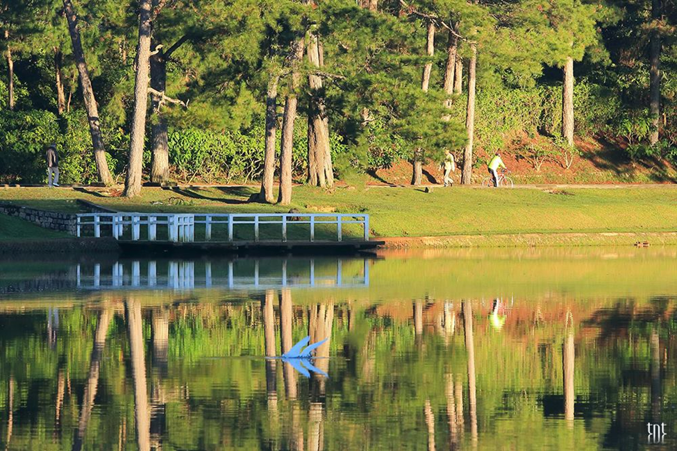

Đà Lạt - Xứ lạnh của phương Nam
Còn gì tuyệt hơn khi có thể chạy trốn cái nắng nóng của Sài Gòn, đến với Đà Lạt yên bình. Những người con phương Nam chưa bao giờ biết đến mùa đông phương Bắc có thể cảm nhận chút ít tại Đà Lạt. Điều đặc biệt là tiết trời Đà Lạt chỉ se se chứ không quá lạnh… cực kỳ đáng giá là địa điểm nghỉ ngơi.

Trong không khí cao nguyên se lạnh, Langbiang huyền thoại thật sự thích hợp cho những hoạt động du lịch dã ngoại, tham quan ngắm cảnh, cắm trại qua đêm. Một số du khách chọn trải nghiệm những trò chơi mới lạ như leo núi chinh phục đỉnh Langbiang, dù lượn, hay ngồi trên xe Jeep lên đỉnh, đi bộ theo những con đường nhựa xuyên qua các cánh rừng thông kỳ vĩ. Từ trên đỉnh núi, phóng tầm mắt xa xa có thể thấy Suối Vàng, suối Bạc và toàn cảnh Đà Lạt trên cao với màn sương giăng bao phủ níu chân du khách.

Trong không khí cao nguyên se lạnh, Langbiang huyền thoại thật sự thích hợp cho những hoạt động du lịch dã ngoại, tham quan ngắm cảnh, cắm trại qua đêm. Một số du khách chọn trải nghiệm những trò chơi mới lạ như leo núi chinh phục đỉnh Langbiang, dù lượn, hay ngồi trên xe Jeep lên đỉnh, đi bộ theo những con đường nhựa xuyên qua các cánh rừng thông kỳ vĩ. Từ trên đỉnh núi, phóng tầm mắt xa xa có thể thấy Suối Vàng, suối Bạc và toàn cảnh Đà Lạt trên cao với màn sương giăng bao phủ níu chân du khách.
Đôi nét về Đà Lạt
Đà Lạt ở đâu? Thành phố này có lẽ không còn quá xa lạ đối với người Việt. Đặc biệt là những tín đồ du lịch. Tuy nhiên, nếu như hỏi Đà Lạt ở đâu trên bản đồ du lịch hoặc cách di chuyển, đi lại như thế nào thì không phải ai cũng biết.
Tham khảo thêm qua video dưới đây bạn nhé :)))
Tham khảo thêm qua video dưới đây bạn nhé :)))
Vị trí của Đà Lạt
Vị trí của thành phố nằm trên cao nguyên nên có độ cao khoảng 1500m so với mực nước biển, với diện tích hơn 39000km2, giáp các huyện Lạc Dương, Đơn Dương, Lâm Hà, Đức Trọng. Đà Lạt nổi tiếng là thành phố của hồ và thác với khoảng 16 hồ lớn nhỏ, trong đó nổi tiếng nhất là hồ Hồ Xuân Hương nằm ở trung tâm thành phố.


Lịch sử hình thành của thành phố Đà Lạt
Đà Lạt do một vị bác sĩ mang tên Alexandre Yersin tìm ra. Vào cuối thế kỉ 19 thì vị bác sĩ mang quốc tịch người pháp này được giao nhiệm vụ từ những nhà cầm quyền của nước Pháp, đi tìm một vùng đất mới tốt lành. Lúc bấy giờ ông đã khám phá và tìm ra được thành phố Đà Lạt. Lúc đầu thì ông bỏ nhiều ngày dài khám phá khu vực Đông Nam Bộ ngày dài. Sau đó mới tìm ra được Đà Lạt.

Ông là người đầu tiên tìm thấy Đà Lạt và đặt chân lên mảnh đất này. Vào ngày 21/06/1893 đúng vào lúc 15 giờ 30 phút. Vào thời khắc vĩ đại đó, ông đã ghi danh là một người tìm ra mảnh đất trù phú này tại cao nguyên Lâm Viên - một chốn bồng lai tiên cảnh mà chắc chắc ai ai cũng đều trầm trồ về vẻ đẹp là mê hồn người của nó.
Ông là người đầu tiên tìm thấy Đà Lạt và đặt chân lên mảnh đất này. Vào ngày 21/06/1893 đúng vào lúc 15 giờ 30 phút. Vào thời khắc vĩ đại đó, ông đã ghi danh là một người tìm ra mảnh đất trù phú này tại cao nguyên Lâm Viên - một chốn bồng lai tiên cảnh mà chắc chắc ai ai cũng đều trầm trồ về vẻ đẹp là mê hồn người của nó.
Con người
Nhắc đến Đà Lạt mà không nhắc tới con người nơi đây thì quả là thiếu sót. Con người Đà Lạt rất thanh lịch, họ mang trong mình nhịp sống chậm rãi, an yên với bản chất rất nồng hậu, mến khách, chẳng vì thế mà ai đến với mảnh đất này cũng dùng những ngôn từ đẹp đẽ nhất để nói về Đà Lạt.
Văn hóa
Thành phố ngàn hoa đã khoác lên cho mình một vẻ đẹp tuyệt vời. Với những bản sắc đa dạng về văn hóa dân tộc vùng tây nguyên. Cùng với những chương trình âm nhạc đậm đà bản sắc dân tộc. Như ca múa nhạc, các loại nhạc cụ dân tộc độc đáo. Trong những ngày diễn ra những lễ hội lớn nhỏ ở thành phố Đà Lạt.

Cứ 2 năm 1 lần tại trung tâm Đà Lạt lại diễn ra festival hoa. Mùa lễ hội 2 năm 1 lần này là để tôn vinh vẻ đẹp của các loại hoa tại Đà Lạt. Cũng chính là thời điểm để Đà Lạt quảng cáo các thương hiệu nổi tiếng ở thành phố Đà Lạt này. Để mọi người ở trong nước và thế giới biết đến Đà Lạt. Đà Lạt có nhiều nét kiến trúc độc đáo. Và còn có những ngôi biệt thự cổ nổi tiếng tại Đà Lạt từ thời pháp đến nay.
Cứ 2 năm 1 lần tại trung tâm Đà Lạt lại diễn ra festival hoa. Mùa lễ hội 2 năm 1 lần này là để tôn vinh vẻ đẹp của các loại hoa tại Đà Lạt. Cũng chính là thời điểm để Đà Lạt quảng cáo các thương hiệu nổi tiếng ở thành phố Đà Lạt này. Để mọi người ở trong nước và thế giới biết đến Đà Lạt. Đà Lạt có nhiều nét kiến trúc độc đáo. Và còn có những ngôi biệt thự cổ nổi tiếng tại Đà Lạt từ thời pháp đến nay.
Đà lạt - Thành phố có nhiều tên nhất Việt Nam
Nhờ khí hậu ôn hòa, cảnh quan thiên nhiên tươi đẹp và di sản kiến trúc phong phú, Đà Lạt còn được biết đến với nhiều tên gọi khác như “Thành phố ngàn hoa”, “Thành phố mộng mơ”, “Thành phố sương mù”, “Thành phố tình yêu”, “Tiểu Paris”...

Trong những tháng năm thuở trước, khi Yersin tìm ra Đà Lạt và trải qua thời kỳ Pháp thuộc, Đà Lạt luôn được biết đến với cái tên “Paris thu nhỏ”. Với sự tương đồng về tiết trời cũng như khí hậu, người Pháp đã dành tình yêu và cải tạo thành phố này chẳng khác chi một phiên bản nhỏ của Paris hoa lệ nơi Âu châu.

Đến với Đà Lạt, một trong những điều lý thú mà nhiều người mong muốn được trải nghiệm chính là khoảnh khắc “săn mây”. Mỗi buổi sớm mai, Đà Lạt thường chìm trong màn sương bao bọc hư ảo. Những khi ấy, cả thành phố chẳng khác chi chốn bồng lai tiên cảnh giữa nhân gian, nhất là khi nắng vừa hửng lên, xuyên qua sương đôi ba vạt nhẹ nhàng.
Những cảnh vật thuộc về khung trời Đà Lạt, dường như đều có khả năng tự sản sinh ra chất thơ, dù là những điều bé nhỏ nhất, cũng mang theo vẻ đẹp khiến lòng người vương vấn.

Có thể nói, mỗi biệt danh chính là một đặc trưng nổi bật của thành phố này. Hãy một lần ghé đến Đà Lạt để tìm hiểu và yêu thêm thành phố này bạn nhé!
Trong những tháng năm thuở trước, khi Yersin tìm ra Đà Lạt và trải qua thời kỳ Pháp thuộc, Đà Lạt luôn được biết đến với cái tên “Paris thu nhỏ”. Với sự tương đồng về tiết trời cũng như khí hậu, người Pháp đã dành tình yêu và cải tạo thành phố này chẳng khác chi một phiên bản nhỏ của Paris hoa lệ nơi Âu châu.

Đến với Đà Lạt, một trong những điều lý thú mà nhiều người mong muốn được trải nghiệm chính là khoảnh khắc “săn mây”. Mỗi buổi sớm mai, Đà Lạt thường chìm trong màn sương bao bọc hư ảo. Những khi ấy, cả thành phố chẳng khác chi chốn bồng lai tiên cảnh giữa nhân gian, nhất là khi nắng vừa hửng lên, xuyên qua sương đôi ba vạt nhẹ nhàng.
Những cảnh vật thuộc về khung trời Đà Lạt, dường như đều có khả năng tự sản sinh ra chất thơ, dù là những điều bé nhỏ nhất, cũng mang theo vẻ đẹp khiến lòng người vương vấn.

Có thể nói, mỗi biệt danh chính là một đặc trưng nổi bật của thành phố này. Hãy một lần ghé đến Đà Lạt để tìm hiểu và yêu thêm thành phố này bạn nhé!